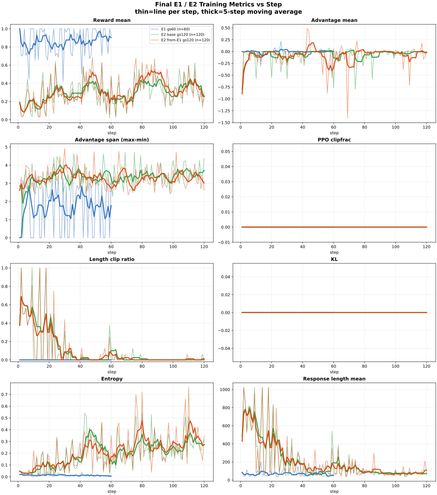
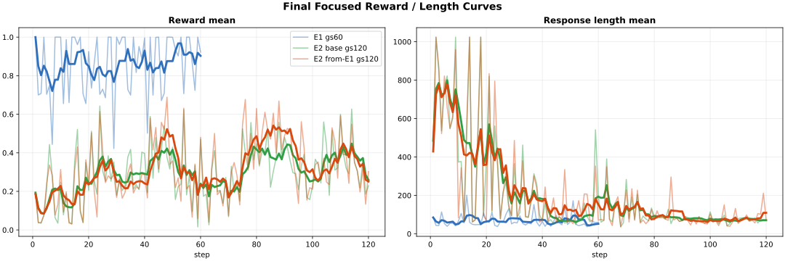
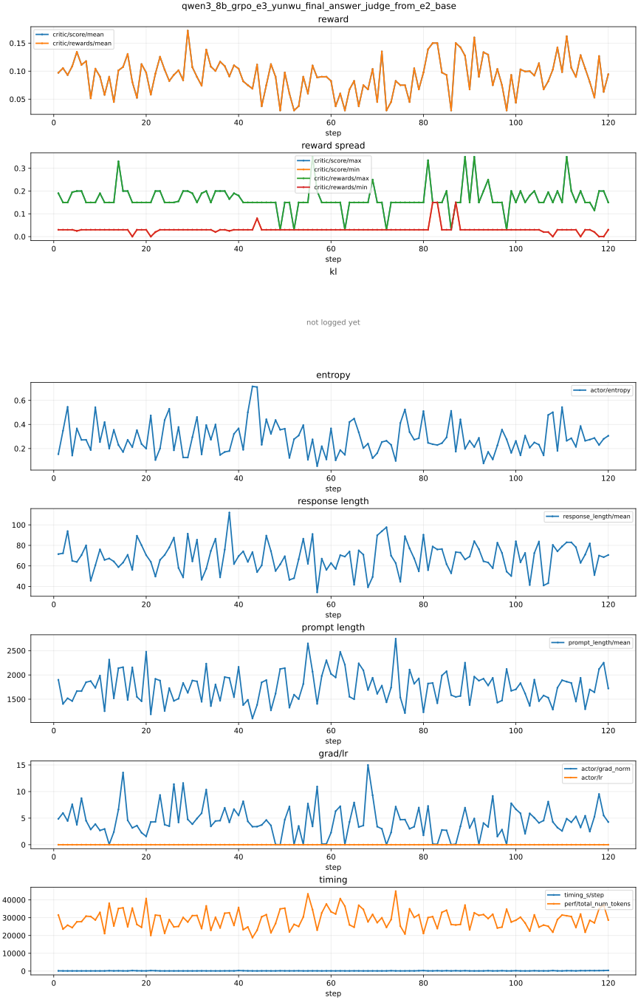
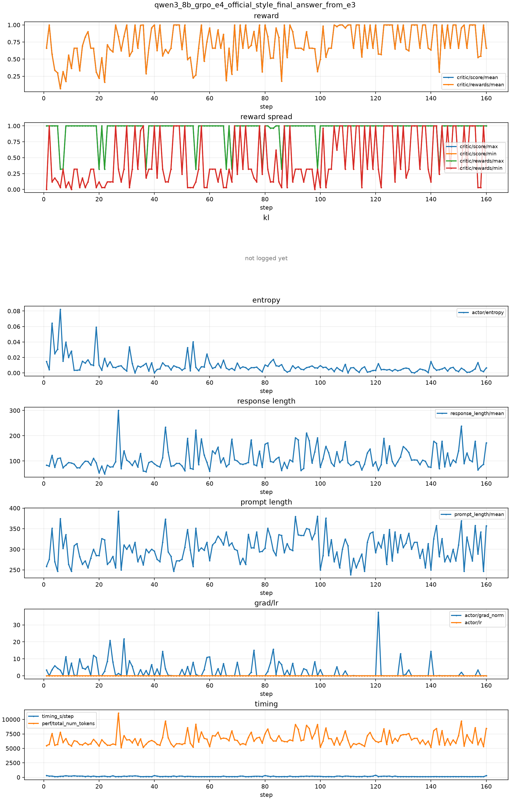
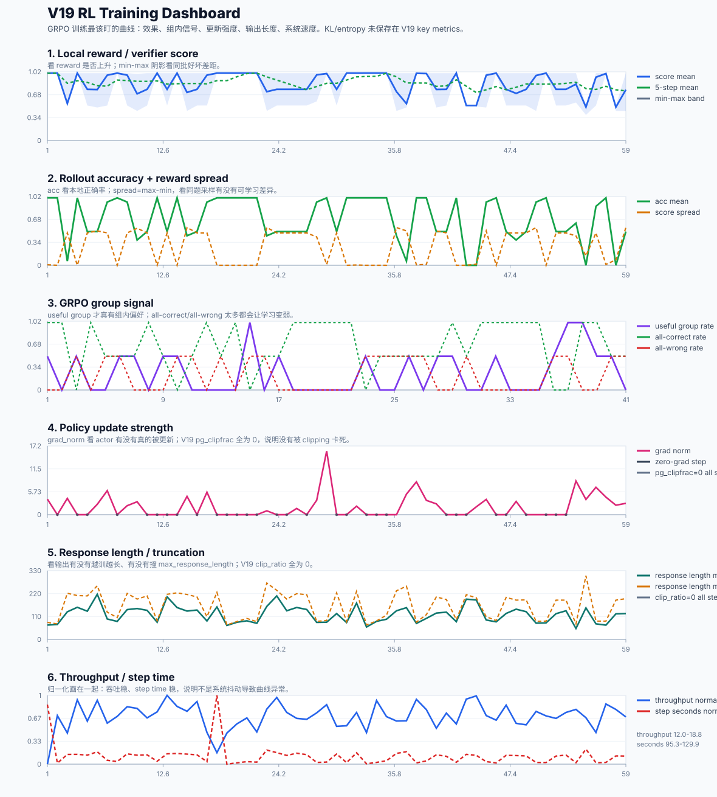
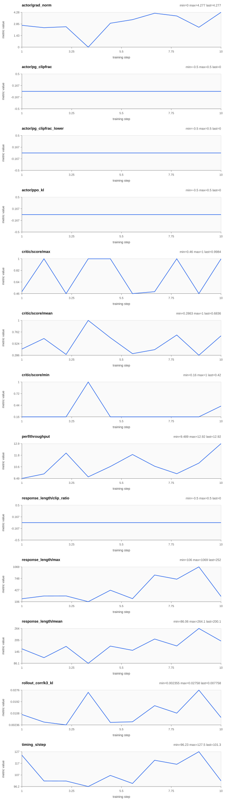

看训练是否正常，优先扫 reward 是否真的上升、KL 是否失控、entropy 是否塌掉、clip 是否过高、response length 是否被 reward 带偏。
图里如果看到 PPO / ppo 字样，不代表实验算法切成了 PPO。verl 的 GRPO 训练入口和若干字段沿用了 PPO 命名，例如
main_ppo、ppo_mini_batch_size、actor/pg_clipfrac。本项目实际配置使用的是 algorithm.adv_estimator=grpo；这些 PPO 字段主要是在记录 clipped policy-gradient 更新强度。





